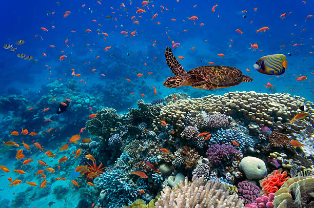
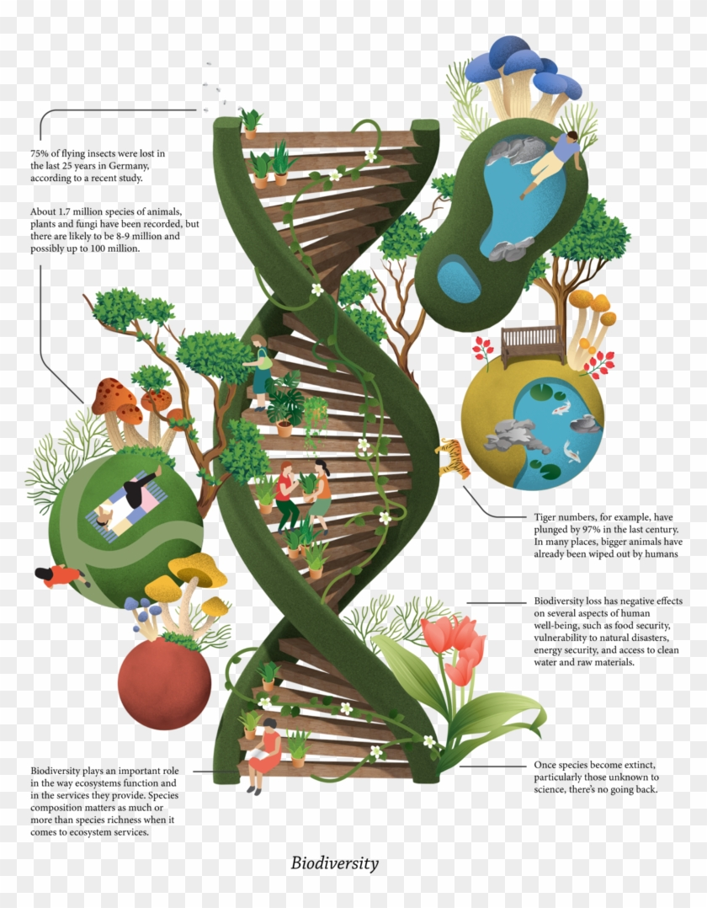
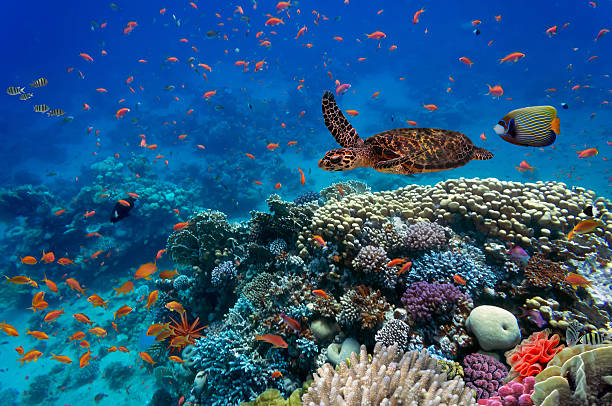
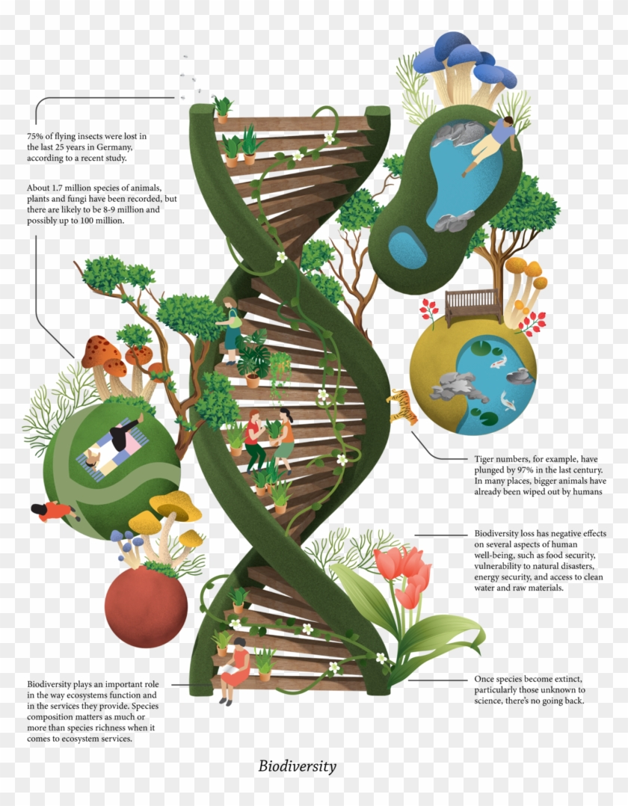
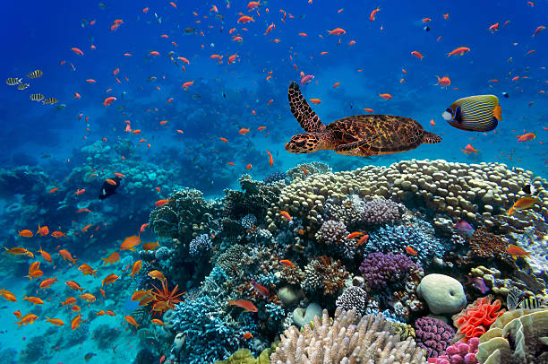
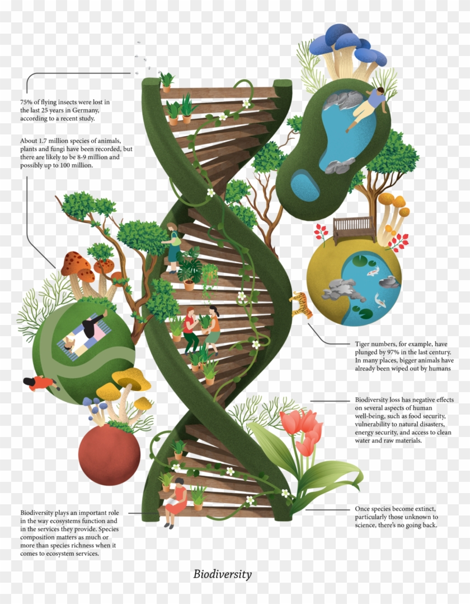
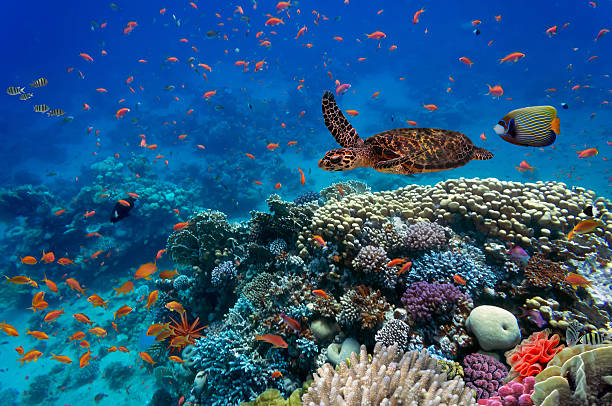
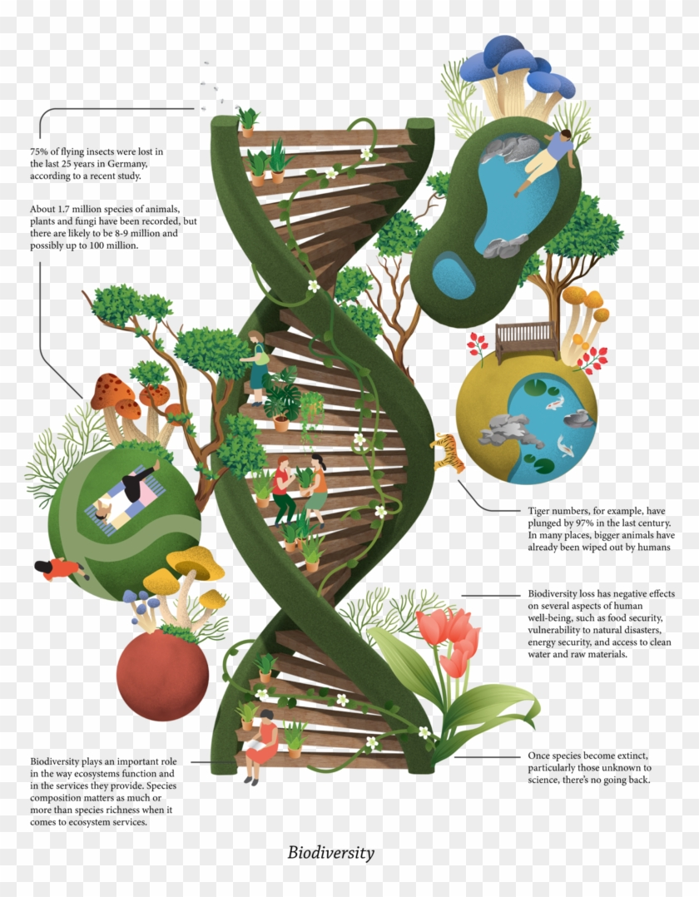

| Biogeographic Zones | Biogeographic Provinces |
|---|---|
| Trans Himalaya | 1A: Himalaya – Ladakh Mountains 1B: Himalaya – Tibetan Plateau 1C: Trans – Himalaya Sikkim |
| The Himalaya | 2A: Himalaya – North West Himalaya 2B: Himalaya – West Himalaya 2C: Himalaya – Central Himalaya 2D: Himalaya – East Himalaya |
| The Indian Desert | 3A: Desert – Thar 3B: Desert – Kutch |
| The Semi-Arid | 4A: Semi-Arid – Punjab Plains 4B: Semi-Arid – Gujarat Rajputana |
| The Western Ghats | 5A: Western Ghats – Malabar Plains 5B: Western Ghats – Western Ghats Mountains |
| The Deccan Peninsula | 6A: Deccan Peninsular – Central Highlands 6B: Deccan Peninsular – Chotta Nagpur 6C: Deccan Peninsular – Eastern Highlands 6D: Deccan Peninsular – Central Plateau 6E: Deccan Peninsular – Deccan South |
| The Gangetic Plains | 7A: Gangetic Plain – Upper Gangetic Plains 7B: Gangetic Plain – Lower Gangetic Plains |
| The Coasts | 8A: Coasts – West Coast 8B: Coasts – East Coast 8C: Coasts – Lakshadweep |
| Northeast India | 9A: North-East – Brahmaputra Valley 9B: North-East – North East Hills |
| Islands | 10A: Islands – Andaman 10B: Islands – Nicobars |